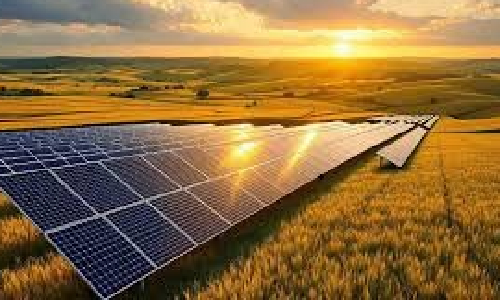
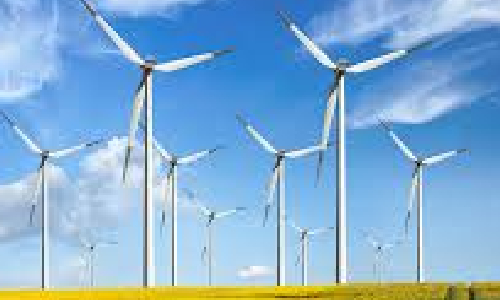
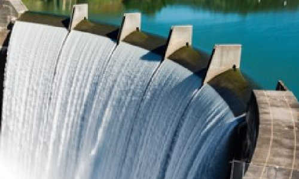

Renewable energy sources are sources of energy that can be replenished. They are sustainable alternatives to fossil fuels.
Solar Energy

Solar energy is electricity generated from the Sun's radiation. It is often harnessed through solar panels. Solar energy is becoming more common as the costs lower and technology improves.
- Advantages: Solar energy is a clean, carbon-free energy source.
- Disadvantages: Solar panels require the use of rare earth metals and has high upfront costs.
Wind Energy

Wind energy is electricity generated from wind turning blades. It is harnessed through wind turbines. Wind energy is expanding as the technology is improved.
- Advantages: Wind energy is a clean, carbon-free energy source.
- Disadvantages: Turbines can be loud and have high upfront costs.
Hydroelectric Energy

Hydroelectric energy is electricity generated from the movement of water. Some dams are being decommissioned due to the environmental impacts.
- Advantages: Hydroelectric energy is a clean, carbon-free energy source.
- Disadvantages: Dams can change ecosystems and displace people. They use rare earth metals.
Why does this matter?
Climate change is driven by the increasing emissions of greenhouse gases. Fossil fuels, and other nonrenewable resources, release greenhouse gases into the atmosphere. This leads to climate change, which results in enhanced weather patterns, rising sea levels, destruction of ecosystems, and more. Renewable energy sources, contrarily, release little to no greenhouse gases, meaning they do not contribute to climate change, preventing the issues from esculating.
Countries, companies, and individuals all around the world are adding renewable energy sources to improve their carbon footprints. Click the link below to learn how you can receive electricity from renewable resources.
Planning Your Home for Renewable Energy